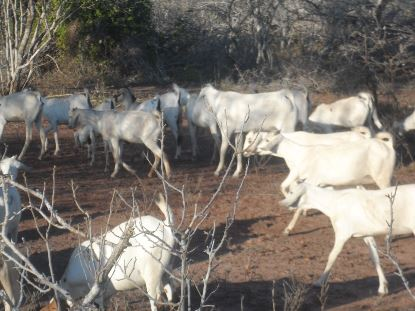

|

Raising meat goats breeds for meat production in Kenya can be a worthwhile initiative. Red meat business is currently underexploited in the country despite the vast opportunities that exists both locally and internationally. The two main indigenous goat breeds, i.e. the Small East African Goat and the Galla have great potential due to their characteristics and adaptability to a wide range of climatic conditions in the country.
Both breeds are raised for meat and can do well in most parts of Kenya. With just simple management skills, good husbandry and selection practices breeders can increase their meat output from these animals and make tidy sums of money.
The Small East African Goat
This goat breed is the most widely spread in Kenya and found throughout Eastern Africa. Wherever they occur the breed is known in by its local name.
Though they do not appear significantly different, they exhibit a wide range of characteristics such that no single description can capture their body coat colours. For example the colours can range from pure white to pure black with different shades and mixes in between. Or they can be different shades of brown mixed with other colours. The hair is fine mostly short at the front and growing longer towards the hind. Bucks have pronounced mane running the full length of the back.
Measured at the shoulders the goats can grow up to 65cm with bucks attaining a live weight between 30 and 40kg and the does weighing 25 to 30kg. Both the bucks and does have horns which sweep backwards and curving upwards at the tip. Ears slightly droop and males have beards.
Due to their slow growth rate, low milk production and heavy body conformation, the breed is only suitable for meat production. The goat is resistant to diseases and the hide has good quality leather. It can be crossed with other indigenous breeds such as Galla or others like the Boer, Anglo Nubian or Alpines goats to give superior cross breeds.
Despite their slow growth rate compared to other goat breeds they have advantages over other goats on being hardy, surviving in very tough environments and resistance to internal parasites and diseases such as trypanosomiasis and others. They also have high fertility.
The Galla Goat
They are docile animals easy to handle with females weighing up to 45 – 55kg and males up to 70kg. The females have a long lifespan of up to 10 years of age. They do not do well in cold wet climate but thriving best in low altitude areas. After a long dry spell they compensate for the loss of in body condition for by a high growth. The milk production is high compared to the Small East African Goat. They can produce up to half litre of milk per day without extra feeds
The breed is resistant to gastro-intestinal parasites, some infectious diseases and tolerates drought. They do well when crossed with other breeds such as Anglo Nubian, the Small East African goat and the Boer goat. The breedhas played an important role in the development of the Kenya Dual Purpose Goat and has also been found to be better foundation stock than the Small East African goat for breeding with Toggenburg.
The Galla goat can be an ideal breed for both the small and large-scale farmers. With planned breeding programs, forage production and improved animal husbandry techniques farmers can improve the production and productivity of their meat goats and hence their profitability.
|